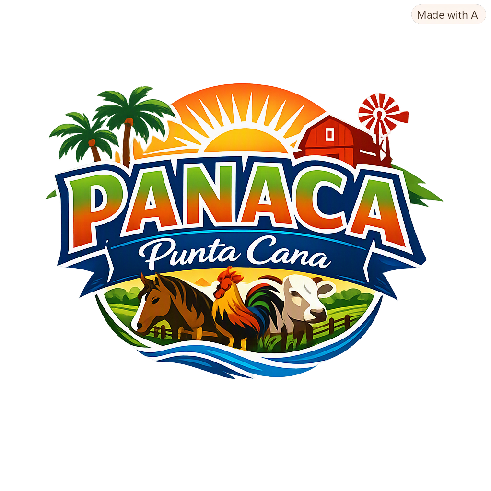

Site Name
Site Name: Pacana Punta Cana
Logo:

Domain: panaca.do
Description: The site name "Pacana Punta Cana" was selected because it represents the tropical identity of Punta Cana and builds a recognizable brand for visitors interested in tourism, culture, and natural experiences in the Dominican Republic.
for the Pacana Punta Cana
The site provides a hub for tourism and cultural experiences in Punta Cana by offering information about local attractions, nature tours, and community events, along with opportunities for visitors to connect and participate in regional activities.
Scenarios
- What is the best e-bike for mountainous areas?
- Where can I find contact information for the club’s directors?
Color Schema
Primary Color: Blue (used for headings)
Secondary Color: Green (used for accents and buttons)
Typography
Fonts selected from Google Fonts:
- Roboto – used for body text
- Montserrat – used for headings
Wireframes
Home Page Layout:
Mobile View: Simple stacked layout with logo, navigation, and content blocks.
Desktop View: Grid layout with header, sidebar navigation, and main content area.